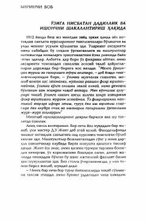

OIOmma oldida erkin va ishonchli so'zlash san'atini o'rganing.
Ushbu kitob insonlarda notiqlik san'atini rivojlantirish, omma oldida erkin va ishonchli so'zlash ko'nikmalarini shakllantirishga bag'ishlangan. Muallif real hayotiy misollar va amaliy mashqlar orqali qo'rquvni yengib, o'ziga bo'lgan ishonchni qanday oshirish mumkinligini tushuntiradi.